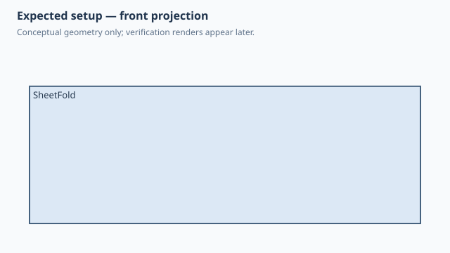

Forge model example
Flat sheet, through hole and 90° fold
What this example makes
SolidCraft 0.42 keeps one connected sheet-metal body with the Ø6 hole on the fixed flat, one native Fold feature and a flat pattern that recovers the original rectangular blank and cutout.


Forge code
This is the complete Forge source used for this example.
"""Native sheet-metal fold fixture used by qualification #305."""
class SheetFold:
width = 80.0
depth = 40.0
thickness = 2.0
bend_radius = 2.0
k_factor = 0.5
fold_angle = 90.0
hole_diameter = 6.0
def build(self):
with Sketch(name="Blank", plane="XY") as blank:
Rectangle2D(self.width, self.depth)
sheet = blank.sheet_metal(
thickness=self.thickness,
bend_radius=self.bend_radius,
k_factor=self.k_factor,
rule_name="SheetFold Rule",
)
sheet = sheet + Hole(
d=self.hole_diameter,
direction=(0, 0, -1),
).at(-20, 0, self.thickness)
return sheet.fold(
line=((20, -20), (20, 20)),
angle=self.fold_angle,
fixed=(-30, 0, 0),
)
SheetFold()
API used
with Sketch(...): Rectangle2D(...); blank.sheet_metal(thickness=..., bend_radius=..., k_factor=...); sheet + Hole(...).at(...); sheet.fold(line=..., angle=..., fixed=...)
Reference code
The same model is written independently with the reference libraries below. This makes it easier to compare modelling style and the resulting shape.
PythonSCAD
"""PythonSCAD geometry reference for the qualified 90-degree sheet fold."""
from math import cos, pi, sin
from pythonscad import *
R_INNER = 2.0
THICKNESS = 2.0
R_OUTER = R_INNER + THICKNESS
X_TANGENT = 17.64380551
Z_TOP = 21.64380551
CENTER = (X_TANGENT, 4.0)
SEGMENTS = 32
def arc_points(radius, start, end, count=SEGMENTS):
return [
[
CENTER[0] + radius * cos(start + (end - start) * i / count),
CENTER[1] + radius * sin(start + (end - start) * i / count),
]
for i in range(count + 1)
]
outer = arc_points(R_OUTER, -pi / 2, 0)
inner = list(reversed(arc_points(R_INNER, -pi / 2, 0)))
profile = [
[-40.0, 0.0],
*outer,
[X_TANGENT + R_OUTER, Z_TOP],
[X_TANGENT + R_INNER, Z_TOP],
*inner,
[-40.0, 2.0],
]
sheet = (
polygon(profile)
.linear_extrude(height=40)
.rotate([90, 0, 0])
.translate([0, 20, 0])
)
hole = cylinder(d=6, h=4).translate([-20, 0, -1])
model = sheet - hole

Reference result checks · PASS · 4/4 passed
| Check | Status | Expected | Measured | Detail |
|---|---|---|---|---|
| bounds | PASS | {'min': [-40.0, -20.0, 0.0], 'max': [21.64380551, 20.0, 21.64380551]} | {'min': [-40.0, -20.0, 0.0], 'max': [21.643805511295795, 20.0, 21.643805511295795]} | max difference 1.295795470923622e-09 mm; allowed 0.5 mm |
| watertight | PASS | True | True | closed mesh |
| volume | PASS | 6343.451332235384 mm³ | 6346.9479478587855 mm³ | difference 3.4966156234013397 mm³; allowed 5.0 mm³ |
| surface distance probes | PASS | 2 surface measurements | 2/2 within tolerance | largest difference 0.14683 mm |
pyBOSL2
"""pyBOSL2 geometry reference for the qualified 90-degree sheet fold."""
from math import cos, pi, sin
from pybosl2 import Path2D, cyl
R_INNER = 2.0
THICKNESS = 2.0
R_OUTER = R_INNER + THICKNESS
X_TANGENT = 17.64380551
Z_TOP = 21.64380551
CENTER = (X_TANGENT, 4.0)
SEGMENTS = 32
def arc_points(radius, start, end, count=SEGMENTS):
return [
[
CENTER[0] + radius * cos(start + (end - start) * i / count),
CENTER[1] + radius * sin(start + (end - start) * i / count),
]
for i in range(count + 1)
]
outer = arc_points(R_OUTER, -pi / 2, 0)
inner = list(reversed(arc_points(R_INNER, -pi / 2, 0)))
profile = [
[-40.0, 0.0],
*outer,
[X_TANGENT + R_OUTER, Z_TOP],
[X_TANGENT + R_INNER, Z_TOP],
*inner,
[-40.0, 2.0],
]
sheet = (
Path2D(profile, closed=True)
.linear_extrude(height=40)
.rotate(90, [1, 0, 0])
.translate([0, 20, 0])
)
hole = cyl(diameter=6, height=4).translate([-20, 0, 1])
model = sheet - hole

Reference result checks · PASS · 4/4 passed
| Check | Status | Expected | Measured | Detail |
|---|---|---|---|---|
| bounds | PASS | {'min': [-40.0, -20.0, 0.0], 'max': [21.64380551, 20.0, 21.64380551]} | {'min': [-40.0, -20.0, 0.0], 'max': [21.64380645751953, 20.0, 21.64380645751953]} | max difference 9.475195312802498e-07 mm; allowed 0.5 mm |
| watertight | PASS | True | True | closed mesh |
| volume | PASS | 6343.451332235384 mm³ | 6346.948027095469 mm³ | difference 3.496694860084972 mm³; allowed 5.0 mm³ |
| surface distance probes | PASS | 2 surface measurements | 2/2 within tolerance | largest difference 0.146831 mm |
CadQuery
"""CadQuery geometry reference for the qualified 90-degree sheet fold."""
from math import cos, pi, sin
import cadquery as cq
R_INNER = 2.0
THICKNESS = 2.0
R_OUTER = R_INNER + THICKNESS
X_TANGENT = 17.64380551
Z_TOP = 21.64380551
CENTER = (X_TANGENT, 4.0)
SEGMENTS = 32
def arc_points(radius, start, end, count=SEGMENTS):
return [
(
CENTER[0] + radius * cos(start + (end - start) * i / count),
CENTER[1] + radius * sin(start + (end - start) * i / count),
)
for i in range(count + 1)
]
outer = arc_points(R_OUTER, -pi / 2, 0)
inner = list(reversed(arc_points(R_INNER, -pi / 2, 0)))
profile = [
(-40.0, 0.0),
*outer,
(X_TANGENT + R_OUTER, Z_TOP),
(X_TANGENT + R_INNER, Z_TOP),
*inner,
(-40.0, 2.0),
]
sheet = (
cq.Workplane("XZ")
.polyline(profile)
.close()
.extrude(20, both=True)
)
hole = (
cq.Workplane("XY")
.center(-20, 0)
.circle(3)
.extrude(4, both=True)
)
result = sheet.cut(hole)
model = cq.Assembly()
model.add(result, name="sheet_fold")

Reference result checks · PASS · 4/4 passed
| Check | Status | Expected | Measured | Detail |
|---|---|---|---|---|
| bounds | PASS | {'min': [-40.0, -20.0, 0.0], 'max': [21.64380551, 20.0, 21.64380551]} | {'min': [-40.0, -20.0, 0.0], 'max': [21.64380645751953, 20.0, 21.64380645751953]} | max difference 9.475195312802498e-07 mm; allowed 0.5 mm |
| watertight | PASS | True | True | closed mesh |
| volume | PASS | 6343.451332235384 mm³ | 6343.323471787434 mm³ | difference 0.12786044795029738 mm³; allowed 5.0 mm³ |
| surface distance probes | PASS | 2 surface measurements | 2/2 within tolerance | largest difference 0.000933008 mm |
build123d
"""build123d 0.12 geometry reference for the qualified 90-degree sheet fold.
build123d's make_brake_formed helper is not used here because the pinned 0.12
implementation fails to solidify this small R2 / 2 mm fixture. The reference
instead builds the exact folded XZ section independently and extrudes it across
the 40 mm width.
"""
from math import cos, pi, sin
from build123d import (
Align,
BuildPart,
BuildSketch,
Cylinder,
Locations,
Mode,
Plane,
Polygon,
extrude,
)
R_INNER = 2.0
THICKNESS = 2.0
R_OUTER = R_INNER + THICKNESS
X_TANGENT = 17.64380551
Z_TOP = 21.64380551
CENTER = (X_TANGENT, 4.0)
SEGMENTS = 32
def arc_points(radius, start, end, count=SEGMENTS):
return [
(
CENTER[0] + radius * cos(start + (end - start) * i / count),
CENTER[1] + radius * sin(start + (end - start) * i / count),
)
for i in range(count + 1)
]
outer = arc_points(R_OUTER, -pi / 2, 0)
inner = list(reversed(arc_points(R_INNER, -pi / 2, 0)))
profile = [
(-40.0, 0.0),
*outer,
(X_TANGENT + R_OUTER, Z_TOP),
(X_TANGENT + R_INNER, Z_TOP),
*inner,
(-40.0, 2.0),
]
with BuildPart() as model:
with BuildSketch(Plane.XZ):
Polygon(*profile)
extrude(amount=20, both=True)
with Locations((-20, 0, -1)):
Cylinder(
3,
4,
align=(Align.CENTER, Align.CENTER, Align.MIN),
mode=Mode.SUBTRACT,
)

Reference result checks · PASS · 4/4 passed
| Check | Status | Expected | Measured | Detail |
|---|---|---|---|---|
| bounds | PASS | {'min': [-40.0, -20.0, 0.0], 'max': [21.64380551, 20.0, 21.64380551]} | {'min': [-40.0, -20.0, 0.0], 'max': [21.64380645751953, 20.0, 21.64380645751953]} | max difference 9.475195312802498e-07 mm; allowed 0.5 mm |
| watertight | PASS | True | True | closed mesh |
| volume | PASS | 6343.451332235384 mm³ | 6343.323471787434 mm³ | difference 0.12786044795029738 mm³; allowed 5.0 mm³ |
| surface distance probes | PASS | 2 surface measurements | 2/2 within tolerance | largest difference 0.000933008 mm |
How Forge builds it in SolidCraft
Forge emits one sheet.manage_rules, one Blank sketch, one sheet.flange(type='base'), one native solid.hole and one native sheet.fold. No solid.extrude or fused-solid bend approximation is used.
Show generated SolidCraft commands
parameters.add
parameters.add
parameters.add
parameters.add
parameters.add
parameters.add
parameters.add
sheet.manage_rules
sketch.create
sketch.rectangle.two_point
sketch.finish
sheet.flange
solid.hole
sheet.foldSolidCraft result
Built and measured with SolidCraft 0.42.0. Open the measurement details to inspect body sizes and editable parameters.
Original model · 1 bodies
Editable parameters
| Name | Value |
|---|---|
width | 80.0 |
depth | 40.0 |
thickness | 2.0 |
bend_radius | 2.0 |
k_factor | 0.5 |
hole_diameter | 6.0 |
fold_angle | 1.5707963267948966 |
Body size
| Body | Minimum | Maximum |
|---|---|---|
| SheetFold | [-40, -20, 0] | [21.6438, 20, 21.6438] |
Semantic validation · PASS · 11/11 checks passed
| Status | Level | Check | Expected | Actual |
|---|---|---|---|---|
| PASS | Q4 | declared target geometry | [{"label": "SheetFold", "min": [-40.0, -20.0, 0.0], "max": [21.64380551, 20.0, 21.64380551]}] | [{"min": [-40.0, -20.0, 0.0], "max": [21.643805510000004, 20.0, 21.643805509615312]}] |
| PASS | Q4 | one connected sheet body | 1 | 1 |
| PASS | Q4 | body remains native sheet metal | {"sheet_metal": true, "closed": true} | {"sheet_metal": true, "closed": true} |
| PASS | Q4 | shared geometry volume | {"volume_mm3": 6343.451332235384, "tolerance_mm3": 0.01} | {"volume_mm3": 6343.451332346599} |
| PASS | Q4 | native history keeps blank, base flange, hole and fold | [["Sketch", "Blank"], ["BaseFlangeFeature", "BaseFlange1"], ["HoleFeature", "Hole1"], ["FoldFeature", "Fold1"]] | [["Sketch", "Blank"], ["BaseFlangeFeature", "BaseFlange1"], ["HoleFeature", "Hole1"], ["FoldFeature", "Fold1"]] |
| PASS | Q4 | flat blank remains one solved native profile | {"name": "Blank", "profiles": 1, "curves": 4, "status": "solved"} | {"curves": 4, "dof": 0, "id": 1, "name": "Blank", "profiles": 1, "status": "solved", "visible": false} |
| PASS | Q4 | flat-pattern inspection returns one sheet result | 1 | 1 |
| PASS | Q4 | flat pattern recovers 80 x 40 x 2 blank | [80.0, 40.0, 2.0] | [80.00000000038469, 40.0, 2.0] |
| PASS | Q4 | flat pattern preserves the Ø6 cutout | {"center": [-20.0, 0.0], "radius": 3.0} | {"center": [-20.0, 0.0], "radius": 3.0} |
| PASS | Q4 | flat pattern reports the qualified 90 degree R2 bend | {"angle_deg": 90.0, "radius": 2.0, "allowance": 4.71238898038469} | {"allowance": 4.71238898038469, "angle_deg": 90.0, "bend": 1, "direction": "up", "end": [20.000000000192344, 20.0], "included_angle_deg": 90.0, "length": 40.0, "radius": 2.0, "start": [20.000000000192344, -20.0]} |
| PASS | Q4 | flat pattern keeps the shared sheet rule | {"rule": "SheetFold Rule", "thickness": 2.0, "k_factor": 0.5} | {"rule": "SheetFold Rule", "thickness": 2.0, "k_factor": 0.5} |
Visual result
Actual is the SolidCraft render. Goal shows the expected shape. Overlay places both on top of each other so differences are easy to see.
Front

Current SolidCraft front view

Expected geometry in the same front view

Expected geometry over the actual front view
Top

Current SolidCraft top view

Expected geometry in the same top view

Expected geometry over the actual top view
Iso
Current SolidCraft iso view

Expected geometry in the same iso view

Expected geometry over the actual iso view
Show extra saved-render views
Right

Current SolidCraft right view

Expected geometry in the same right view

Expected geometry over the actual right view
Technical test details
Q1 and Q2 tests
These are the exact automated tests used for this example.
- Q1 PASS
- Q2 PASS
Geometry checks
These are the sizes and measurement points used by the automated checks.
| Body | Minimum | Maximum |
|---|---|---|
| SheetFold | [-40.0, -20.0, 0.0] | [21.64380551, 20.0, 21.64380551] |
- Is the size check enough for this model? No — The formed bounding box does not prove sheet thickness, the Ø6 cutout or that the upright region came from a native bend. Volume and native sheet history/flat-pattern evidence are required.
- Views checked: front, top, iso
- Internal features checked: 1
- Expected volume: 6343.451332235384 mm³ (±5.0 mm³)
- Closed solid expected: True
- Surface points checked: 2
Show all geometry check points
Internal features
- fixed-flat Ø6 hole: centre
[-20.0, 0.0], diameter 6.0 mm, Z[0.0, 2.0]
Surface measurement points
- fixed-flat hole at z=0.5: point
[-20.0, 0.0, 0.5]→ 3.0 mm (±0.3 mm) - fixed-flat hole at z=1.5: point
[-20.0, 0.0, 1.5]→ 3.0 mm (±0.3 mm)
Saved-design test
No saved-model change is required. No Q5 mutation is required in this first sheet-metal qualification. Q1-Q4 prove the shared rule, native feature history and formed geometry; a post-build flat-pattern inspection proves recoverability of the developed blank.
Raw test files
- Forge fixture source
- PythonSCAD reference source
- pyBOSL2 reference source
- CadQuery reference source
- build123d reference source
- Generated command JSON in build output
- results-flat-pattern.json
- results.json
- measurements.json
- joint-inspect.json
- model.sc
- model.step
- qualification-result.json
- validation.json
- visual-validation.json
- camera-front.json
- camera-iso.json
- camera-right.json
- camera-top.json
- q1-case-evidence.txt
- q2-case-evidence.txt
- Native snapshot: model.png
- Native snapshot: model-top.png
- Native snapshot: goal-top.png
- Native snapshot: overlay-top.png
- Native snapshot: model-front.png
- Native snapshot: goal-front.png
- Native snapshot: overlay-front.png
- Native snapshot: visual-diff-front.png
- Native snapshot: model-right.png
- Native snapshot: goal-right.png
- Native snapshot: overlay-right.png
- Native snapshot: visual-diff-right.png
- Native snapshot: model-iso.png
- Native snapshot: goal-iso.png
- Native snapshot: overlay-iso.png
- Native snapshot: visual-diff-iso.png
- Reference evidence: reference-pythonscad/result.json
- Reference evidence: reference-pythonscad/model.stl
- Reference evidence: reference-pythonscad/model-front.png
- Reference evidence: reference-pythonscad/model-right.png
- Reference evidence: reference-pythonscad/model-iso.png
- Reference evidence: reference-pybosl2/result.json
- Reference evidence: reference-pybosl2/model.stl
- Reference evidence: reference-pybosl2/model-front.png
- Reference evidence: reference-pybosl2/model-right.png
- Reference evidence: reference-pybosl2/model-iso.png
- Reference evidence: reference-cadquery/result.json
- Reference evidence: reference-cadquery/model.stl
- Reference evidence: reference-cadquery/model-front.png
- Reference evidence: reference-cadquery/model-right.png
- Reference evidence: reference-cadquery/model-iso.png
- Reference evidence: reference-build123d/result.json
- Reference evidence: reference-build123d/model.stl
- Reference evidence: reference-build123d/model-front.png
- Reference evidence: reference-build123d/model-right.png
- Reference evidence: reference-build123d/model-iso.png


Reference documentation
- build123d: The pinned build123d 0.12.0 reference uses make_brake_formed for an independent final-geometry comparison. Its newer BuildSheet/bend API is design input only and is not silently substituted into the pinned reference runtime.
- CadQuery: Independent final geometry is built from flat and bent solid envelopes; CadQuery does not provide the same native sheet-history contract.
- PythonSCAD: Constructive geometry independently represents the formed envelope and through hole; native sheet rules/history remain SolidCraft-only evidence.
- pyBOSL2: Constructive geometry independently represents the formed envelope and through hole; native sheet rules/history remain SolidCraft-only evidence.